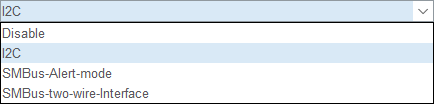
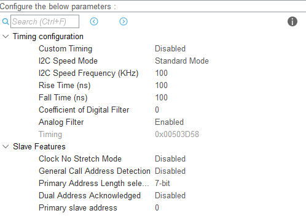
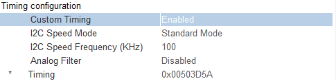
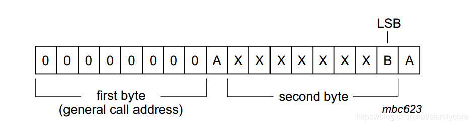
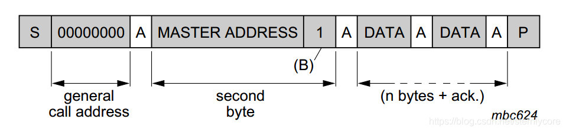

CubeMX配置功能系列：iic
说明
由于前面已经详细介绍了iic通信协议（详见通信协议：iic [ g0dMa0’s Blog ]），这里主要就硬件iic在cubemx中的配置作介绍。
通道设置

哈哈没想到吧，iic通道不止支持iic协议，孩子。
SMBus-系统管理总线，是iic的扩展。利用系统管理总线，设备可提供制造商信息，告诉系统它的型号/部件号，保存暂停事件的状态，报告不同类型的错误，接收控制参数，和返回它的状态。SMBus为系统和电源管理相关的任务提供控制总线。
SMBus 为系统和电源管理这样的任务提供了一条控制总线，使用 SMBus 的系统，设备之间发送和接收消息都是通过 SMBus，而不是使用单独的控制线，这样可以节省设备的管脚数。\
所以它与iic的区别很明显了，一个是该总线上连接设备自身可以控制总线(I2C，速率较高)，想干嘛就干嘛；另一个是设备之间可以通过它来传送信息，但是速率比较慢，比如用在检测各元件状态并更新硬件设置引脚等，同时廉价是它的优点。
SMBus-Alert是一个带中断线的可选信号，用于那些希望扩展他们的控制能力而牺牲一个引脚的设备。SMBALERT和SCL和SDA信号一样，是一种线与信号。SMBALERT通常和SMBus广播呼叫地址一起使用。与SMBus有关的消息为2字节。单一的从设备可以通过SMBALERT发信号给主机表示它希望进行通信，这可通过设置I2C_CR1寄存器上的ALERT位实现。主机处理该中断并通过提醒响应地址ARA(Alert Response Address，地址值为0001100x)访问所有SMBALERT设备。只有那些将SMBALERT拉低的设备能应答ARA。此状态是由 I2C_SR1寄存器中的SMBALERT状态标记来标识的。主机执行一个修改过的接收字节操作。由从发送设备提供的7位设备地址被放在字节的7个最高位上，第八个位可以是0或1。如果多个设备把SMBALERT拉低，最高优先级设备(最小的地址)将在地址传输期间通过标准仲裁赢得通信权。在确认从地址后，此设备不得再拉低它的SMBALERT，如果当信息传输完成后，主机仍看到SMBALERT低，就知道需要再次读ARA。没有执行SMBALERT信号的主机可以定期访问ARA。有关SMBus提醒模式的更多详细资料，请参考2.0版的SMBus规范。说白了还是通信，只不过是从机与从机的通信
我先忽略系统管理总线协议。专注于iic。
主模式设置

Custom Timing
这个牛逼了，iiC通信依赖于特定的时序参数，如时钟频率、高低电平时间等。STM32CubeMX通常提供预定义的时序配置，适用于常见场景。但在某些情况下，预定义配置可能无法满足需求，这时就需要手动调整时序参数。
通过“Custom Timing”，你可以根据具体需求调整以下参数：
- SCL时钟频率：设置SCL时钟的频率。
- SCL高低电平时间：分别设置SCL高电平和低电平的持续时间。
- 数据建立和保持时间：设置数据在时钟边沿前后的稳定时间。
- 起始和停止条件时间：设置起始和停止条件的持续时间。
使用场景
- 非标准I2C设备：某些设备可能需要特定的时序。
- 优化性能：在高噪声环境中，调整时序可以提高通信稳定性。
- 调试：在调试时，手动调整时序有助于排查问题。
配置步骤
- 在CubeMX中启用I2C外设。
- 选择“Custom Timing”选项。
- 手动输入所需的时序参数。
- 生成代码并验证配置。
注意事项
- 确保时序参数符合I2C规范和设备要求。
- 错误的配置可能导致通信失败或损坏设备。
通过“Custom Timing”，你可以更灵活地配置I2C通信，满足特定需求。
看完以后发现我还是不会用啊，，，，，
Timing
这个是和上面那个一起用的，我猜是把Timing这个设定值写入某个寄存器里，然后这个寄存器的不同位控制着不同的时序参数，如高低电平时间什么的。没有深究。因为估计也不会用自定义时序。

自定义时序enable 后的界面如上图所示。
RiseTime/FallTime/Coefficient of Digital Filter
控制iic上升沿/下降沿的时间，iic对于上下降沿的时间是有要求的。
数字滤波器系数。不启用设置为0，启用则可设置为1-15，表示1-15个iic外设时钟。
这三个参数要遵循一套非常复杂的时序计算方法的，也和对应的外设有关系，在设置前也要阅读相关的外设资料。此处暂且不展开。
Analog Filter
模拟滤波器。
从模式设置
Clock No Stretch Mode
IIC时钟拉伸(Clock stretching)：
有时候低速从机可能由于上一个请求还没处理完，无法继续接收主机的后续请求，即主机的数据传输速率超过了从机的处理能力。这种情况下，从机可以进行时钟拉伸来要求主机暂停传输数据 。通常时钟都是由主机提供的，从机只是在SDA上读数据或者发数据。
时钟拉伸则是从机在主机释放SCL后，将SCL主动拉低并保持，此时要求主机停止在SCL上产生脉冲以及在SDA上发送数据，直到从机释放SCL（SCL为高电平）。之后主机便可以继续正常的数据传输了。可见时钟拉伸实际上是利用了时钟同步的机制，只是时钟由从机产生。 如果系统中存在这种低速从机并且从机实现了时钟拉伸，主机必须能够处理这种情况，实际上大部分从机设备中不包含SCL驱动器的，因此无法拉伸时钟。
Primary Address Length selection
从设备地址长度 置从设备的地址是7bit还是10bit。大部分为7bit。
General call address
通用广播地址是为了寻址总线上所有设备。 如果一个设备不需要使用广播功能，可以不响应广播。如果设备需要使用广播功能，则它在检测到广播地址后发送响应，并作为从机接收读取总线上发送的数据。主机不知道总线上有多少从机发送响应。总线上所有可以响应广播的从机读取广播地址后的第二个及后面的字节。 不能处理这些广播数据的从机通过不发送响应的方式忽略它。同样地，如果有一个或一个以上的从机发送响应，则主机就检测不到总线上其它没有响应的设备。 广播消息的含义总是定义在第二个字节。

以下内容需要的时候再看
有两种可能情况：
-
最低位“B”为0
-
最低位“B”为1
-
“B”为0，第二个字节包括以下定义：
0000 0110（06h）：复位并通过硬件写内容到从机的可编程部分。所有可以响应此类广播的从机，收到此两字节后，进行复位并进入它们地址的可编程部分。注意确保设备在加电后不会将SDA或SCL拉低，因为这些低电平会阻塞总线；
0000 0100（04h）：通过硬件写内容到从机的可编程部分，作用类似（06h），但设备不会复位；
0000 0000（00h）：这个不应该作为第二个字节用。
编程时序参考相应设备的DATASHEET。\ -
“B”为1，两字节广播定义为“硬件广播”。主机在编程后，可以发送既定的从机地址到总线上，构成两字节序列的“硬件广播”。主机可能并不知道总线上从机的地址，它只能通过硬件广播的方式，将自身地址通知给系统。
硬件广播的第二个字节的前七位包括主机的地址。总线上的智能设备如微控制器，读取此地址并接收主机发送的其它信息。如果主机也可以作为从机使用，则以上读取的主机地址实际上也就是（切换主从模式后的）从机地址。在系统中，一种可能是系统复位后设备由主机发送模式切换到从机接收模式，这时由系统主机先告诉硬件主机数据应送往的从机地址，这样当硬件主机发送数据时就可以直接向指定从机（地址）发送数据了。
如下所示：

Dual Address Acknowledged
双地址确认。允许从机响应两个不同的地址。有啥用？？？？
Primary slave address
从设备初始地址。不用填。
参考资料
本文标题：CubeMX配置功能系列：iic
文章作者：GoDm@
发布时间：2025-03-12
最后更新：2025-03-12
原始链接：https://blog.godmao.top/posts/58129/
版权声明：本文遵循[CC 4.0 BY-SA]版权协议，转载请附上原文出处链接和本声明。